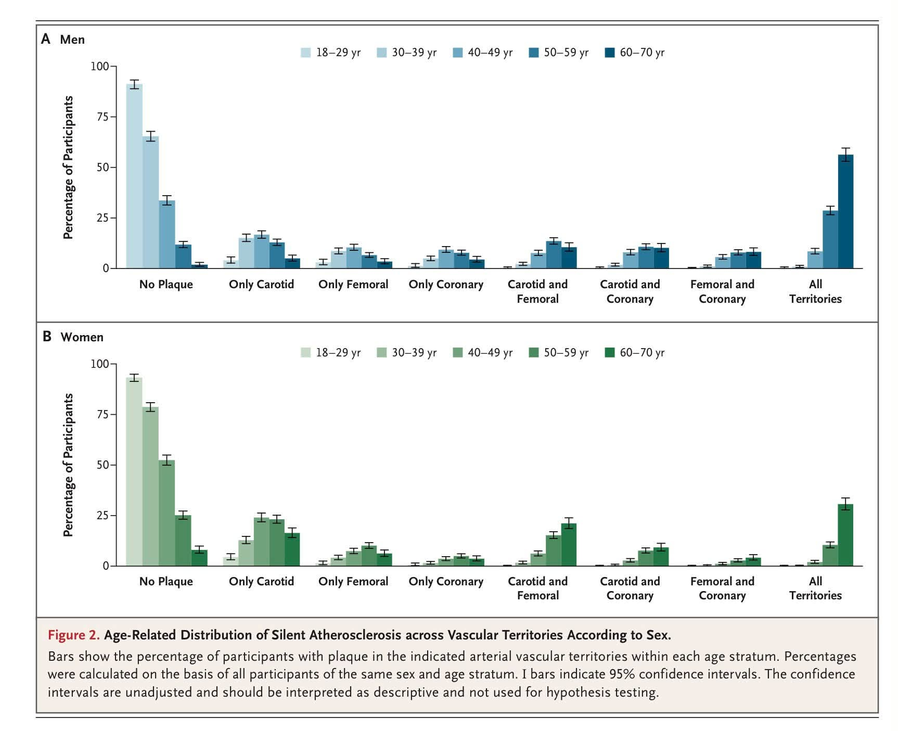
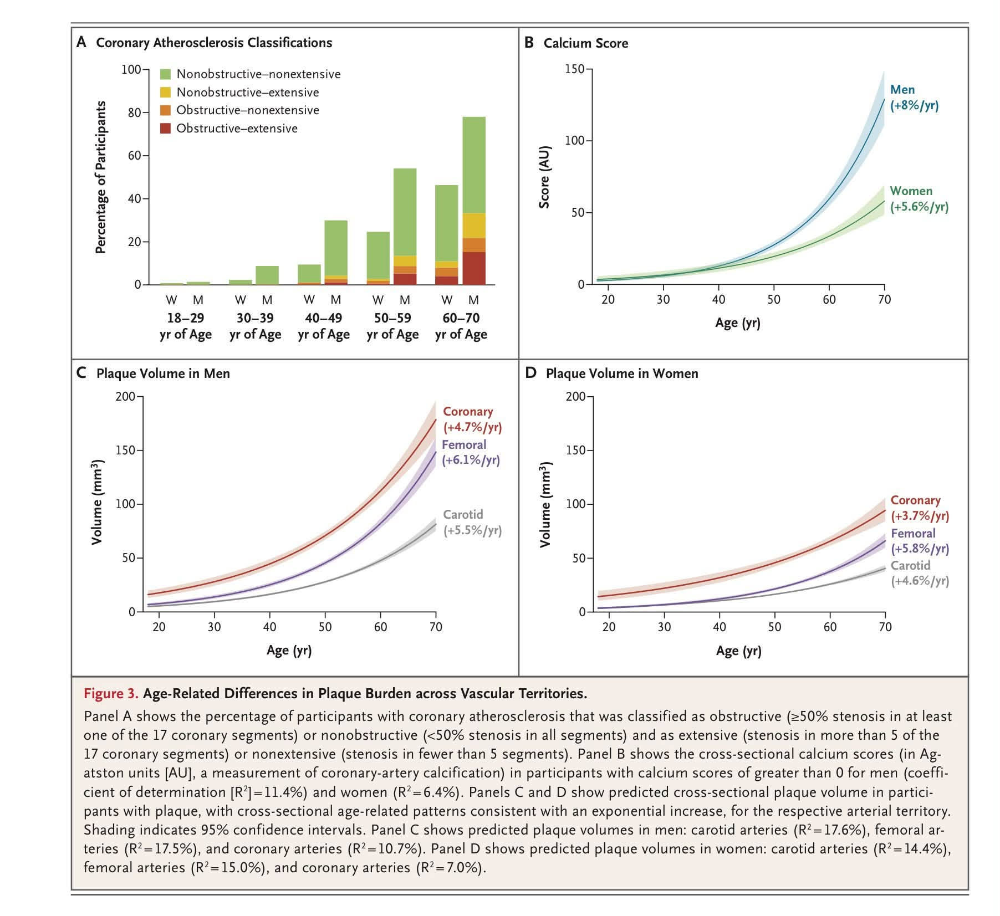

Quoted:
“A calcium score of zero does not necessarily mean absence of coronary plaque. Among participants aged 30-39 who had coronary plaque on CT angiography, 41.8% of men and 48.4% of women had a calcium score of zero. Early plaques may be non-calcified and therefore invisible to calcium scoring.”
“By age 60-70, only 1.9% of men and 8.1% of women had no detectable plaque in any of the three vascular territories examined.”
“Atherosclerosis is a cumulative process that develops over decades. Rather than waiting until 10-year risk becomes high, the priority should be to maintain favorable cardiovascular risk factors throughout life: optimal blood pressure, low exposure to atherogenic lipoproteins, normal glucose metabolism, healthy waist circumference, healthy diet, regular physical activity and no smoking.”
#reactHD #nejmHD #cac0HD #preventionHD #ctaHD #cacHD
A new very interesting new study in the New England Journal of Medicine provides one of the clearest pictures yet of how early atherosclerosis begins across adult life.
The REACT investigators studied 16,808 adults aged 18–70 years in Denmark and Spain, all without known atherosclerotic cardiovascular disease, using 3D carotid and femoral ultrasound together with coronary CT angiography.
Paper · N Engl J Med · 2026Prevalence of Silent Atherosclerosis across Adult Life.Conclusion: This study of silent atherosclerosis showed that the disease was detectable in early adulthood, with age- and sex-associated increases in prevalence across arterial territories and marked increases in plaque volume. (Funded by the Novo Nordisk Foundation; REACT ClinicalTrials.gov number, NCT06692127.).nejm.org
The findings are striking.
Silent atherosclerosis was already detectable in 8.7% of men and 6.7% of women aged 18–29 years. By age 30–39, prevalence had increased to 34.6% in men and 21.3% in women. Overall, plaque was present in 57% of participants.
By age 60–70, only 1.9% of men and 8.1% of women had no detectable plaque in any of the three vascular territories examined.
An important finding is the disconnect between 10-year cardiovascular risk and the actual presence of atherosclerosis.
A younger adult may have a very low predicted 10-year risk while the disease process has already begun. In REACT, a high SCORE2 category had only 1.9% sensitivity for detecting silent atherosclerosis.
This does not mean SCORE2 is a poor tool. It means that predicting an event over the next 10 years is not the same as asking whether atherosclerosis is already present.
Another important message concerns coronary calcium.
A calcium score of zero does not necessarily mean absence of coronary plaque. Among participants aged 30–39 who had coronary plaque on CT angiography, 41.8% of men and 48.4% of women had a calcium score of zero. Early plaques may be non-calcified and therefore invisible to calcium scoring.
But perhaps the most important implication is not that we should image everyone.
It is that prevention must begin much earlier.
Atherosclerosis is a cumulative process that develops over decades. Rather than waiting until 10-year risk becomes high, the priority should be to maintain favorable cardiovascular risk factors throughout life: optimal blood pressure, low exposure to atherogenic lipoproteins, normal glucose metabolism, healthy waist circumference, healthy diet, regular physical activity and no smoking.
This is the essence of primordial prevention: preventing prolonged exposure to cardiovascular risk factors before substantial arterial disease has time to accumulate.
The study is cross-sectional and does not prove that imaging-guided treatment improves outcomes.
But the central message is simple:
Do not wait for cardiovascular risk to become high. Prevent the cumulative exposure that allows atherosclerosis to develop in the first place.
#Atherosclerosis #CardiovascularDisease #Prevention #PrimordialPrevention #Cardiology #HealthyLongevity #NEJM



